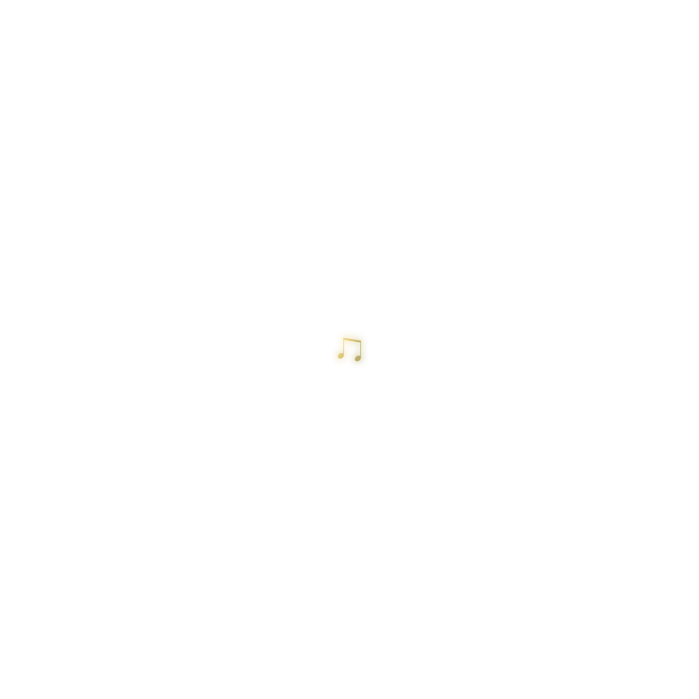
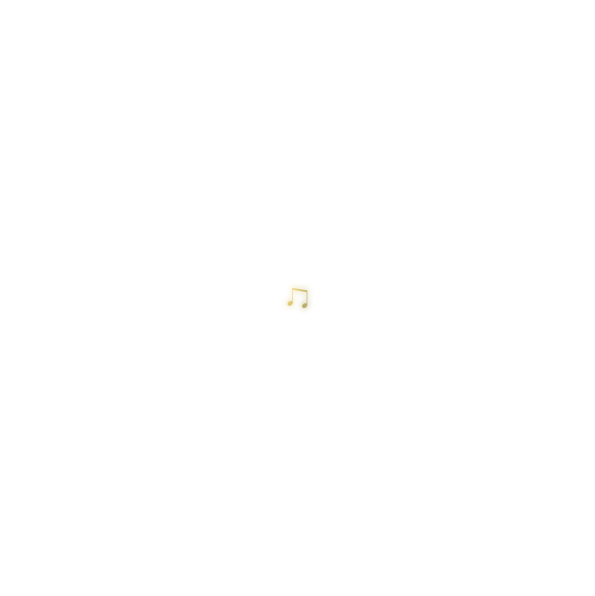

1
2
3
1
2
3
Memories slip through time... what will remain?
1
2
3
“Fragments of melody echo through the dark...”

Scattered notes drift through the air—some glowing, some fading. Each one hums a different phrase, a piece of Elara’s past.

Aurelius reaches toward one note. It dissolves in his hand, revealing a whispered line: “Do you remember how it ended?”
 


As the final notes vanish, silence deepens—only the path ahead remains, veiled and unknown.

“Is it you… or just your memory?”
He peers into the still water—his own face stares back, but something flickers. Her eyes? Her sorrow?
The pool shimmers. Elara’s voice echoes faintly: “Was I ever real, or just a melody you held onto?”
The reflection splits, revealing fragments of her memory—smiles, tears, music. He can’t tell if she’s calling him back, or saying goodbye.
“A fading whisper…”
He would always see her through the corridor glass, her silhouette dancing as she hummed. A quiet ritual before rehearsal.
Her notes lingered even after she left the room.
They seemed etched into the walls of the theatre itself—
like ghosts of a forgotten aria.
One night, the lights dimmed. The air shimmered. He followed the sound of her voice, but what he found wasn’t Elara—only her echo in the Veil.

“Who are you?” she asked—not in fear, but in curiosity. Aurelius' heart broke quietly. She no longer remembered his name.
Each time he called her name, her eyes flickered—recognition dancing just out of reach. Memory was not linear in the Veil.

“A promise to return…”
In a place where time no longer moved, she left him a note: “You have to let go.” The handwriting was shaky, but it was hers.
He read the note under the ghostlight, a single tear tracing his jawline. The theatre was silent, except for her melody looping faintly in the background.
He had to choose: walk back into the real world—or stay, dissolve into memory with her. One step forward would decide everything.

Do you wish to send her a final message?
Your message has been sent into The Veil...
She came back, but something had changed.
The melody stopped—but peace followed.
They vanished into memory, together.